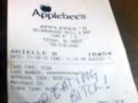

Privacy policy & cookies
Please note, this privacy policy applies to this website or our mobile applications (for example our iPhone, android and iPad apps) (a “Site”). If you do not accept this privacy policy and cookies notice, do not use this Site.
Associated Newspapers Ltd is part of the Daily Mail and General Trust plc group (‘DMGT’). Members of the DMGT group may,use and share, within that group, the information you provide and other information held about you for the purposes set out below. For more information about the DMGT group please see the DMGT website.
When you create or log in to an online account you agree to our privacy policy and cookie notice. Information collected from your use of this website or our mobile applications (for example, iPhone, android and iPad apps) will be processed in accordance with this notice. Please see our cookies notice.
Privacy notice
Information we may hold about you
- Information you’ve provided to us, including our websites
- Information about products and services you’ve ordered or enquired about
- Information provided by other companies who have obtained your permission to share information about you
- Information about your interaction with adverts and services such as registration, comments
- Information we collect using cookies stored on your device (for example, this may be a PC, phone or tablet) about your use of MailOnline and/or selected third party websites. For more information on cookies and how to manage them, please see our cookies notice below.
- Your IP address, this is a number that identifies a specific network device on the internet and is required for your device and is required for your device to communicate with websites
- Technical information from your device relating to the service you receive
Please do not submit your personal information to us if you do not wish us to collect it.
Message boards, blogs and other public forums
Please note, the Site makes message boards, blogs and other such user generated content facilities available to users of the Site and registered users can provide content for and participate in these facilities. Any information that is disclosed in these areas of our Site becomes public information and you should always be careful when deciding to disclose your personal information. For more information, please click on the Site's Terms and House Rules.
Email a friend and share this article facilities
Please note, when you use these facilities and provide us with personal data (e.g. the name and email address) of a third party, please ensure that you have their consent before giving us their details.
How we may use your information
By using this Site, you agree that we may collect, hold, process and use your information (including personal information) for the purpose of providing you with the Site services and developing our business which shall include (without limitation):
- Verifying your identity (for example when you return to the Site)
- Personalising your visits to the Site and developing the design and style of the Site to improve the services provided to you
- Informing you about the latest changes to the Site, or products, services or promotional offers that you might find interesting
- Dealing with, and responding to you about, a comment you have submitted for or on our message boards, blogs and other such user generated content facilities
- Enabling you to share our content with others e.g. using our Email a friend and Share this article facilities
- Informing you if you have been successful in any Site competitions or promotions
- Compiling customer reviews
- Conducting market research
- Carrying out statistical, technical and logistical analysis
- According to your preferences, communicating (and personalising such communication) with you:
- To send you periodic newsletters about your chosen services
- To send you direct marketing. This may include communications by post, telephone or email or SMS about us and our business partners’ products and services, events and special offers, including where applicable, for a reasonable time after you have ceased to be a reader of ours
- To provide you with personalised services, such as providing with you with viewing recommendations and tailored advertising. This includes where we have agreement to store information about you on the devices you use, for example to make some of the adverts you see more relevant to you
- To provide you with advertising more relevant to your interests and your online behaviour through the use of cookies when you visit our website(s)
We may share your personal information with other companies within the DMGT group of companies
Subject to obtaining your consent, we may also supply personal information about you to third parties
We may transfer, sell or assign any of the information described in this policy to third parties as a result of a sale, merger, consolidation, change of control, transfer of assets or reorganisation of our business.
Updating your preferences
- Marketing
You can opt out by clicking on the ‘unsubscribe’ link in the direct marketing/newsletter emails from us. Your can opt out of marketing text messages replying ‘STOP’. ‘Or you can use the contacting us’ details at the end of this privacy notice.
- Online behavioural advertising (OBA)
If you do not want to receive online advertising where this advertising is relevant to your interests, or don’t want information processed through the use of cookies, please see the section below on cookies.
Interest based advertising
Cookies used by the A&N Media Advertising Network & Associated Newspapers.
In order to fund our websites we run advertising on them – much of this advertising is run by the A&N Media Advertising Network. To make its advertising more relevant and effective, the network uses a range of technologies provided by third parties; many of which use cookies.
Cookies are files that store small amounts of information on your computer or other device (for example, your mobile phone). None of the cookies that we use contain information such as your real name or address, so you cannot be identified personally by them. Some of the cookies used by our websites are set by us, and some are set by third parties who are delivering services on our behalf.
Advertising services
We gather anonymous information such as on the types of pages visited, and keywords searched on in order to build an overall, but anonymous, picture of interests or preferences based on individual users browsing habits so that we can offer a more personal experience. To this information, we include information relating to a user’s country, region and connection type gathered from elements of the IP of the browsing device. This practice is a core method used by our group to make our online advertising more efficient for our advertisers and more relevant to consumers.
With permission from our advertisers, we also collect information about their sites, for use on their advertising campaigns. This is often called Retargeting, or Remarketing, and involves showing ads to groups of users that have, for example, visited that client’s homepage.
We will also gather information, still anonymously, on the users that reach an action page on an advertiser’s site. This allows us to monitor how many sales or actions we achieve for a client, and therefore how effective our advertising is.
In order to know how many advertisements we serve, how many times these are clicked, how many advertisements we show to a given user and how many customer actions these generate, we use cookies when we show advertisements on a page.
As well as our licensed ad servers, ads are also often served from third-party ad servers, such as those of media agencies, which all use cookies to track the same metrics as ours do.
For more information about interest based advertising and how to turn this feature off, please see our cookies notice below.
Ad verification technology
In order to protect our advertisers’ brands, we often use a technology that scans the page to ascertain that it is safe from profane, sensitive & potentially brand-negative topics, before serving an ad there. This process is called Ad Verification, and these technologies use cookies to count ads served, those blocked, clicked and engaged by a user (i.e. they have hovered over them with their cursor).
For a list of cookies served to specific A&N Media websites and MailOnline, please see our cookies notice below. For more information about other cookies, please see our privacy policy and cookies FAQs.
No data transmission over the internet can be entirely secure, so we do not guarantee the security of your personal information and/or use of the Site. However, we use reasonable endeavours to protect the security of your personal information from unauthorised access or use by using encryption technology. In addition to these safeguards, your personal information is protected in the UK by the Data Protection Act 1998. This provides that the information which we hold about you should be processed fairly and lawfully, should be accurate, relevant and not excessive, not be retained for longer than is necessary and, if applicable, be kept up to date. For more information on the Data Protection Act 1998 and your related rights please see www.ico.gov.uk.
Cookies notice
You should be aware that when you use our websites, mobile sites, or mobile apps, we may collect information by using 'cookies'.
If you'd like to learn how to manage these cookies and 'opt in' and 'out' of different types, please see our privacy policy and cookie FAQ.
What are cookies and how do they work?
Cookies are small bits of text that are downloaded to your computer or mobile device when you visit a website. Your browser sends these cookies back to the website every time you visit the site again, so it can recognise you and can then tailor what you see on the screen.
What do you use cookies for?
Cookies are an important part of the internet. They make using websites much smoother and affect lots of the useful features of websites. There are many different uses for cookies, but they fall into four main groups:
(i) Cookies that are needed to provide the service you have asked for
Some cookies are essential so you can move around the website and use its features. Without these cookies, services you've asked for can't be provided. These cookies don't gather information about you that could be used for marketing or remembering where you've been on the internet.
Here are some examples of essential cookies:
- Keeping you logged in during your visit; without cookies you might have to log in on every page you go to.
- When you add something to the online shopping basket, cookies make sure it's still there when you get to the checkout.
- Some are session cookies which make it possible to navigate through the website smoothly. However these are automatically deleted after you close your web browser.
(ii) Improving your browsing experience
These cookies allow the website to remember choices you make, such as your language or region and they provide improved features.
Here are a few examples of just some of the ways that cookies are used to improve your experience on our websites:
- Remembering your preferences and settings, including marketing preferences.
- Remembering if you've filled in a survey, so you're not asked to do it again.
- Remembering if you've been to the site before. If you are a first-time user, you might see different content to a regular user.
- Restricting the number of times you're shown a particular advertisment. This is sometimes called 'frequency capping'.
- Showing you information that's relevant to products of ours that you have.
- Enabling social media components, like Facebook or Twitter.
- Showing 'related article' links that are relevant to the page you're looking at.
- Remembering a location you've entered such as weather forecasts.
(iii) Analytics
We like to keep track of what pages and links are popular and which ones don't get used so much to help us keep our sites relevant and up to date. It's also very useful to be able to identify trends of how people navigate (find their way through) our sites and if they get 'error messages' from web pages.
This group of cookies, often called 'analytics cookies' are used to gather this information. These cookies don't collect information that identifies you. The information collected is anonymous and is grouped with the information from everyone else’s cookies. We can then see the overall patterns of usage rather than any one person’s activity. Analytics cookies only record activity on the site you are on and they are only used to improve how a website works.
Some of our websites and some of the emails you might get from us also contain small invisible images known as 'web beacons' or 'tracking pixels'. These are used to count the number of times the page or email has been viewed and allows us to measure the effectiveness of its marketing and emails. These web beacons are anonymous and don't contain or collect any information that identifies you.
We also use 'affiliate' cookies. Some of our web pages will contain promotional links to other companies’ sites. If you follow one of these links and then register with or buy something from that other site, a cookie is sometimes used to tell that other site that you came from one of our sites. That other site may then pay us a small amount for the successful referral. This works using a cookie. Learn how to manage your analytics cookies.
(iv) Showing advertising that is relevant to your interests
We sell space on some of our sites to advertisers. The resulting adverts often contain cookies. The advertiser uses the browsing information collected from these cookies to:
- restrict the number of times you see the same ad (frequency capping);
- and help show other ads that are relevant to you while you're on our websites. This is often called online behavioural advertising (OBA). OBA is a way of using information about your web-browsing activity, collected by using cookies, to group you with other users into interest groups and show you advertisements based on those interests. The OBA data collected from cookies you get when you're on our sites is only used to show relevant ads on our sites, not on other websites.
Sometimes our websites contain ads for our own MailOnline or Daily Mail products. These ads use cookies in the same way as described above.
So how does OBA work? Let's look at an example. Imagine you visit a website about travel. That website shows an advert and with that advert you receive a cookie. Imagine you then visit one of our websites which has an advert from the same advertiser you saw on the travel site. The advertiser will give you a new version of the cookie you received on the travel site. The advertiser can then use that cookie to recognise that you've previously been to a travel site and show you a relevant ad.
Although the OBA data collected uses your browsing activity to understand your interests, the data is anonymous and isn’t linked to you as a person. Even if you log in to our websites, the OBA data is still not linked to you.
Neither we, nor the companies who show ads on our sites sell data collected from cookies to any other organisations.
It’s easy to control interest based advertising and manage your cookies if you want to. For more information, see our ‘controlling interest based advertising and other third party cookies’ page or visit or our privacy policy and cookie FAQs.
Contacting us and accessing your personal information
Any queries or comments about this privacy notice or if you wish to review or receive copies of the personal information we hold about you should be sent to info@mailonline.co.uk or write to us at:
Legal Department.
Associated Newspapers Limited
Northcliffe House
2 Derry Street
London
W8 5TT
United Kingdom
We may charge a small administration fee (not exceeding the maximum permitted by law) in relation to fulfilling a request for access to personal information.
- Six Israeli 'spies' executed before baying mob in Gaza City,...
- Rebekah Brooks and Andy Coulson WILL face court over 'making...
- Outrage after woman flashes middle finger at Arlington...
- Petraeus' wife 'threatens shamed CIA boss with divorce after...
-  'Stop eating b***h!' Applebee's waitress gets rude advice...
- Revealed: How investigators bungled evidence that 'would...
-
 UP fan takes to the skies in a house by tying hundreds of...
UP fan takes to the skies in a house by tying hundreds of...
- Female anti-gay Christian lawyer 'abducted teenage girl to...
-
 Katie Couric tells Lauren Scruggs her prosthetic arm is...
Katie Couric tells Lauren Scruggs her prosthetic arm is...
- Swedish woman accused of having sex in flat with SKELETONS...
- Price Is Right model wins $775K after she claims producers...
- Security blunder over RAF photos of William: Pictures...
Sorry we are unable to accept comments for legal reasons.